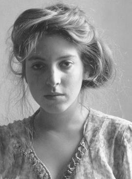

|  | Francesca Stern Woodman was born in Denver, Colorado, to artists George Woodman and Betty Woodman (née Abrahams). Her mother was Jewish and her father was from a Protestant background.[8] Her older brother, Charles, later became an associate professor of electronic art. Woodman took her first self-portrait at age thirteen and continued photographing herself until she died. She attended public school in Boulder, Colorado, between 1963 and 1971, except for second grade, which she attended in Italy, where the family spent many summers between school years. She began high school in 1972 at Abbot Academy, a private Massachusetts boarding school. There, she began to develop her photographic skills and became interested in the art form. Abbot Academy merged with Phillips Academy in 1973; Woodman graduated from the public Boulder High School in 1975. Through 1975, she spent summers with her family in Italy in the Florentine countryside, where the family lived on an old farm. |
| Beginning in 1975, Woodman attended the Rhode Island School of Design (RISD) in Providence, Rhode Island. She studied in Rome between 1977 and 1978 in an RISD honors program. Because she spoke fluent Italian, she was able to befriend Italian intellectuals and artists. She returned to Rhode Island in late 1978 to graduate from RISD. Woodman moved to New York City in 1979. After spending the summer of 1979 in Stanwood, Washington visiting her boyfriend at Pilchuck Glass School, she returned to New York "to make a career in photography." She sent portfolios of her work to fashion photographers, but "her solicitations did not lead anywhere". In the summer of 1980, she was an artist-in-residence at the MacDowell Colony in Peterborough, New Hampshire. In late 1980, Woodman became depressed due to the failure of her work to attract attention and due to a broken relationship.[16] She survived a suicide attempt in the autumn of 1980, after which she lived with her parents in Manhattan. | |
|
On January 19, 1981, Woodman took her life, aged twenty-two, jumping out of a loft window of a building on the East Side of New York City. An acquaintance wrote, "things had been bad, there had been therapy, things had gotten better, guard had been let down". Her father has suggested that Woodman's suicide was related to an unsuccessful application for funding from the National Endowment for the Arts. A lackluster response to her photography and a failed relationship had pushed her into the deep depression.